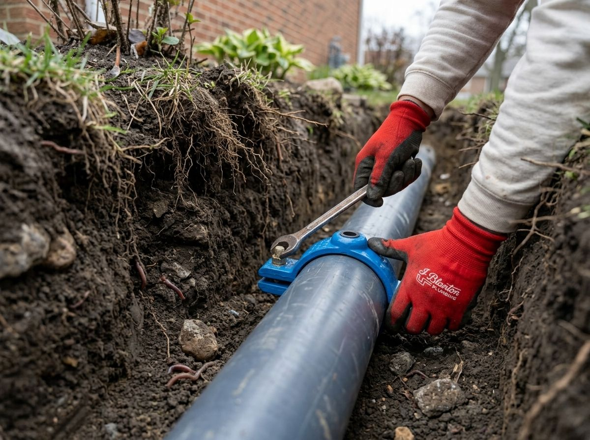
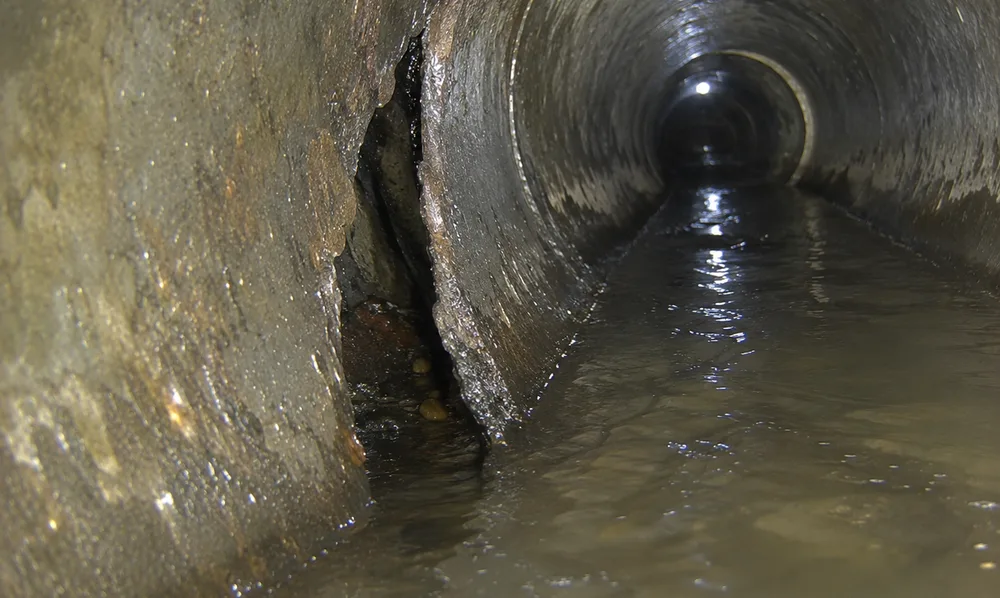
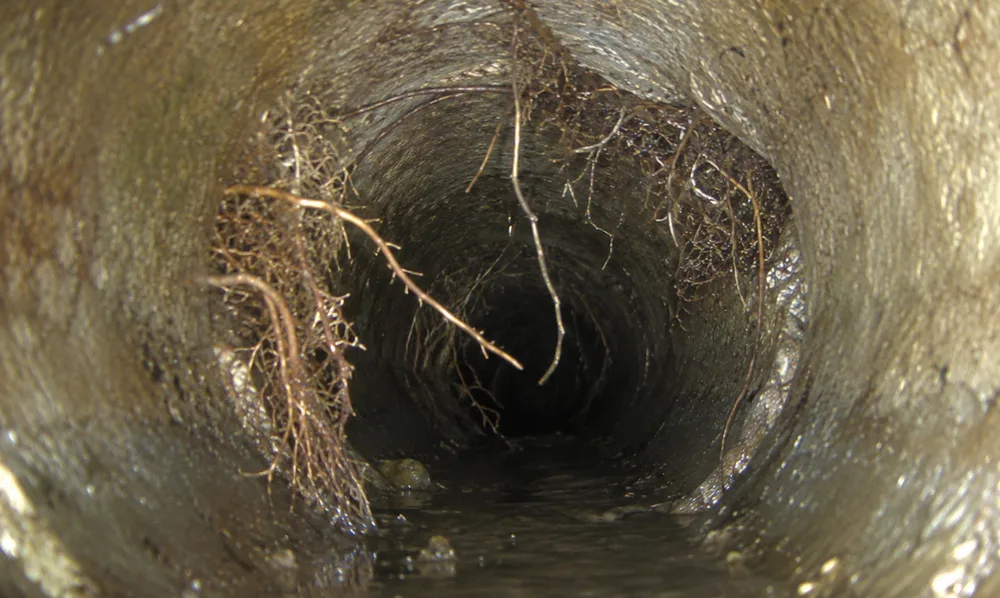
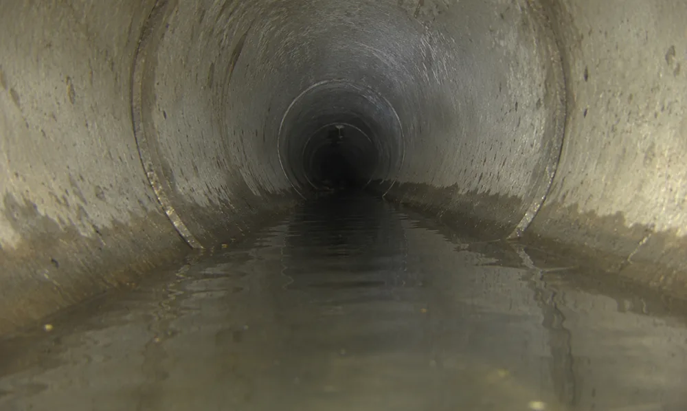
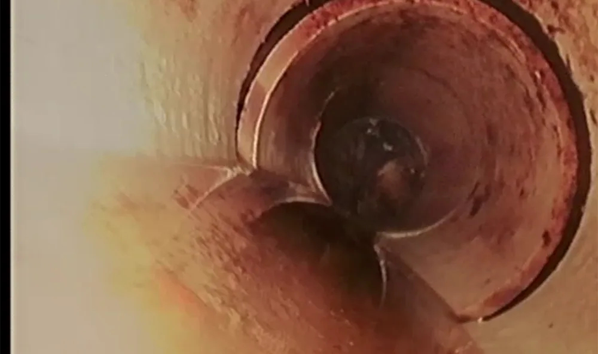
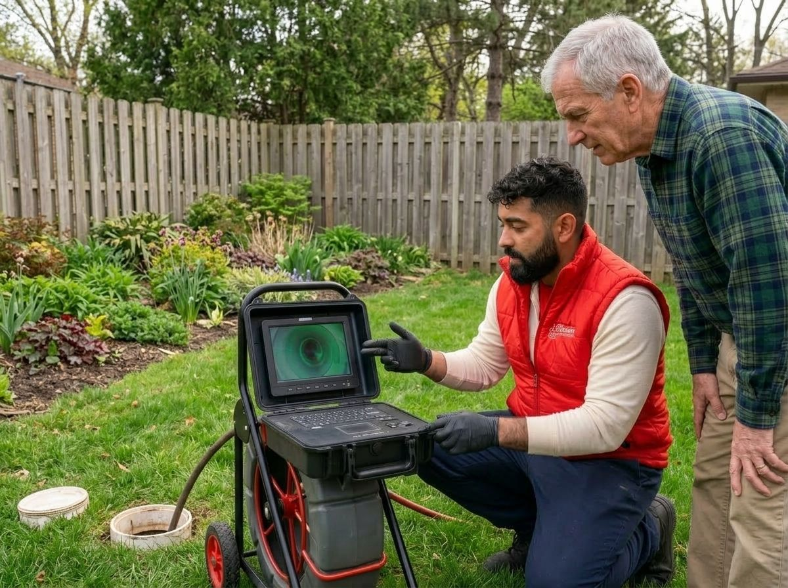

Trenchless Sewer Line Repair
Don't tear up your yard or driveway for a sewer repair.
Sewer line problems don't stay small, and a bottle of drain cleaner won't fix what's actually wrong. A bubbling toilet, gurgling pipes, or drains that run slow all point to something happening underground. Here's what that could mean, and how we can help.

A sewer line problem doesn't always mean a full replacement. Most issues start smaller than that, and catching them early is what keeps them that way. Here's how to know where you stand:
If rodding clears it but the same slow drain or gurgling returns within a few months, the clog isn't the real problem. Something further down the line is catching debris again.
A backup that keeps happening, or a soggy patch in the yard, points to something wrong with the pipe itself, not a one-time clog. Rodding alone probably won't hold this time.
Once a camera inspection confirms damage to the pipe, this isn't a rodding job anymore. We'll walk you through what repair looks like for your line.
A sewer line doesn't fail all at once. It's usually one of a handful of causes wearing on the pipe over years. Here's what we find most often:

Homes built before the 1970s often have clay or cast iron sewer lines. Clay typically lasts 50 to 60 years and is especially vulnerable to cracking at the joints. Cast iron holds up longer, usually 50 to 75 years, but corrodes from the inside as it ages.

Roots grow toward any source of moisture, and a sewer line is exactly that. Once a root finds a crack or a loose joint, it grows into the pipe and keeps growing until it blocks the flow or cracks the pipe further.

Ground that freezes and thaws through the winter expands and contracts, and pipe joints take the strain. Over years of that cycle, joints can separate or the pipe can settle into a low spot, called a belly, where waste collects instead of flowing through.

Not every sewer line was installed the same way. A pipe laid without the right slope, or backfilled poorly, fails faster than one installed correctly, even if the material itself is sound.
We run a camera down the line first, always. You see the same footage we do, so nothing about what's wrong is a guess, ours or yours.
We'll tell you straight whether it's a repair or a replacement, and why. If a smaller fix holds, that's what we recommend, not the bigger job.
Once we know what we're dealing with, you get a flat rate before any work starts. No surprise numbers once the job is underway.

Once we know what's wrong, there's usually more than one way to fix it. Which method makes sense depends on the pipe's condition, location, and how it failed.
| Method | What It Involves | Typical Disruption |
|---|---|---|
| Trenchless Pipe Lining | A resin-coated liner is pulled through the existing pipe and cured in place, creating a new pipe inside the old one. | Minimal digging, usually just small access points |
| Trenchless Pipe Bursting | A new pipe is pulled through the old one while a bursting head fractures the old pipe outward to make room. | Minimal digging, works even when the old pipe is badly damaged |
| Traditional Excavation (Spot Repair) | The damaged section is dug up and replaced directly. | More digging, but sometimes the only option depending on damage location and access |
Your technician will walk you through which method fits your situation after the camera inspection, along with what to expect from start to finish.
Curious what actually happens once we're on site? Watch how we diagnose and repair a sewer line, camera first, every time.
"I had an exceptional experience with Andreas from J. Blanton Plumbing. He came out to perform a camera inspection of my sewer line and was incredibly professional, thorough, and knowledgeable. He took the time to walk me through everything on the screen, explained each detail clearly, and answered all my questions with patience and honesty."
"I had J. Blanton Plumbing come service a potential sewer line back-up and I was super impressed with the entire experience. My technician was Stephen Walen and he was fantastic. He scoped our entire line so we could see where our main line hooks up to off-shoots of our other pipes. He walked through all different short & long-term scenarios so we could make informed decisions."
"I had another company come out first to fix my sewer line that got blocked in this cold weather, but the issue was not fully resolved. I made an appointment with J Blanton because of their promotion. They all were professional, knowledgeable, offered solutions, and answered all my questions. They all went above and beyond to make sure my issue is fixed efficiently and as soon as possible."
Annual Protection Plan
Prevent catastrophes before they disrupt your life. The No Drip Club ensures your waste and sewer lines are monitored and serviced regularly by J. Blanton’s absolute best.

Don't tear up your yard or driveway for a sewer repair.

Clears most blockages fast.

For lines too far gone for a targeted repair.

Flush out older buildup with high-pressure water.

See exactly what's causing the problem before any work begins.

Keeps sewage moving up and out, even during heavy rain.

Routine service that catches small issues before they become a backup.

New lines for new builds, conversions, and system upgrades.

Dispatched nights, weekends, and holidays.
Slow drains, gurgling, a sewage smell, and backups that return after rodding are the main warning signs.
The most common warning signs are slow drains across multiple fixtures, gurgling sounds from toilets or pipes, a sewage smell inside or outside the home, and backups that keep coming back after rodding. When you're seeing more than one of these at the same time, the problem is usually in the main line, not a single drain.
We start with a camera inspection, so you see exactly what's happening inside the pipe before any repair is discussed.
We start with a camera inspection. A technician runs a camera down the line and shows you exactly what's happening inside the pipe, so you're looking at the same picture we are before any repair gets discussed.
It depends on the method. Trenchless repairs can sometimes finish in a single day; excavation takes longer.
It depends on the method and how deep the pipe sits. Trenchless repairs from the inside can sometimes be finished in a single day. Traditional excavation takes longer, since it means digging down to the pipe. Your technician will give you a timeline once the camera inspection shows what we're dealing with.
Cost depends on the repair method, pipe material, and how far the damage extends. We'll walk you through it after we see what's going on.
The cost depends on the repair method, the pipe material, and how far the damage extends. Give us a call and we'll walk you through it after we see what's going on.
Replacement usually comes up when a pipe has collapsed, is badly offset, or has failed in more than one spot.
Replacement usually comes up when a pipe has collapsed, is badly offset, or has failed in more than one spot. If that's what the camera shows, we'll tell you honestly instead of trying to patch something that won't hold. Our Sewer Replacement page has more on what that process looks like.
After the camera inspection, we pull permits, walk you through your options, and give you a flat rate before work begins.
After the camera inspection, we pull any required permits, walk you through your options, and give you a flat rate before work begins. You'll know what's happening and why at every step.
In most cases, yes. We handle the permitting as part of the job, so you don't have to sort it out yourself.
In most cases, yes. Permit requirements depend on the scope of the work and your local building department. We handle the permitting as part of the job, so it's not something you have to sort out yourself.
Regular camera inspections catch small issues before they turn into a backup. It's part of what No Drip Club visits are built around.
Regular camera inspections catch small issues, like a root starting to grow into a joint, before they turn into a backup. That's part of what the No Drip Club's scheduled visits are built around.
We’ve been fixing sewer lines for over 30 years, and we’ll tell you exactly what’s wrong before we touch anything. One call gets it handled.